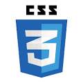
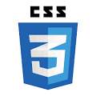

Hi, RAGUL S
Web Developer & Web Development
Project
Explore
Ecommerce Website Management System
An ecommerce website management system typically includes a variety of modules that work together to provide a comprehensive solution for managing an online store. It includes Modules like Product Management Module, Order Management Module, Customer Management Module, Payment Gateway Module, Confirmation Order. In these we use technical like HTML, CSS, JS, SQL and multiple of option in that to store the user details in server we use XAMPP server, for designing the web we use like HTML and CSS.
Digitalized Notice Board System
A digitalized notice board system module is a software solution designed to display information on electronic screens or displays. It replaces traditional physical notice boards with a digital system that allows organizations to display information in a more efficient and dynamic way. It includes Modules like Display Module, Content Management Module, User Management Module. In these Mostly we familiar to use HTML, CSS, SQL to manage the project.
Leaf Disease Detection using machine learning
In this project we focus to identify and classify diseases on plant leaves based on images captured or predefined dataset. Here are the modules involved in a leaf disease detection system using machine learning like Data Collection Module, Preprocessing Module, Feature Extraction Module, User Interface Module, Deployment Module using of these we find out the leaf gets affect or not if get affected to make remedies.
Estimate the crop yield using data analytics (IBM Project)
We will be analyzing some important visualization, creating a dashboard and by going through these we will get most of the insights of Crop production in India. Data visualization charts (Seasons with average productions, with years usage of Area and Production, Top 10 States with most area, State with crop production, States with the crop production along with season) by using IBM Watson and Cognos and analysis with different graphs to user with iframe link to display in webpage.
Web crawler equipped job portal with automatic job updates
A web crawler equipped job portal with automatic job updates module is a software solution that crawls job websites and automatically updates a job portal with the latest job postings. Here are the modules involved in a web crawler equipped job portal with automatic job updates, like Web Crawler Module, Data Extraction Module, Database Module, Administration Module. It is based upon two parts like web crawler, automatic job update (manually update by admin).
My Skills
 



About Page